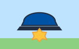
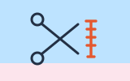

01Jobs That Help Us · ការងារដែលជួយយើងfirefighter
A firefighter puts out fires and keeps people safe.
អ្នកពន្លត់អគ្គីភ័យពន្លត់ភ្លើង និងរក្សាសុវត្ថិភាពឱ្យមនុស្ស។
ការងារ · Power Up Level 6 · Unit 6 · Pages 66-67
Every job in this unit helps other people, but in a different way. The quiz on page 67 asks what you like doing, and your answers point to a job. The best job for you is a job you enjoy.
Three groups of jobs: jobs that help us, jobs that make things, and jobs in the sky, on the sea and on stage.
Space listen · ← → move · K show text
A firefighter puts out fires and keeps people safe.
អ្នកពន្លត់អគ្គីភ័យពន្លត់ភ្លើង និងរក្សាសុវត្ថិភាពឱ្យមនុស្ស។

A police officer keeps our streets safe and catches bad people.
មន្ត្រីប៉ូលីសរក្សាសុវត្ថិភាពនៅតាមផ្លូវ និងចាប់ជនខិលខូច។
A postman delivers letters and parcels to our homes.
អ្នកចែកសំបុត្រ នាំសំបុត្រ និងកញ្ចប់អីវ៉ាន់ទៅដល់ផ្ទះរបស់យើង។
A librarian works in a library and looks after the books.
បណ្ណារក្សធ្វើការនៅបណ្ណាល័យ និងថែរក្សាសៀវភៅ។
A cleaner cleans houses, offices and schools.
អ្នកសម្អាតសម្អាតផ្ទះ ការិយាល័យ និងសាលារៀន។
An architect designs new buildings and houses.
ស្ថាបត្យកររចនាអគារ និងផ្ទះថ្មីៗ។
A programmer writes computer programs and games.
អ្នកសរសេរកម្មវិធី សរសេរកម្មវិធីកុំព្យូទ័រ និងហ្គេម។
A scientist asks questions and does experiments.
អ្នកវិទ្យាសាស្ត្រសួរសំណួរ និងធ្វើការពិសោធន៍។

A hairdresser cuts and washes people's hair.
ជាងកាត់សក់កាត់ និងលាងសក់ឱ្យមនុស្ស។
A publisher makes books and magazines ready for readers.
អ្នកបោះពុម្ពរៀបចំសៀវភៅ និងទស្សនាវដ្តីឱ្យរួចរាល់សម្រាប់អ្នកអាន។
A pilot flies a plane high in the sky.
អ្នកបើកយន្តហោះបើកយន្តហោះខ្ពស់នៅលើមេឃ។
A sailor works on a ship and sails across the sea.
នាវិកធ្វើការនៅលើកប៉ាល់ និងធ្វើដំណើរឆ្លងសមុទ្រ។
A musician plays music and sings songs.
តន្ត្រីករលេងភ្លេង និងច្រៀងចម្រៀង។
A politician works in the government and helps to run the country.
អ្នកនយោបាយធ្វើការនៅក្នុងរដ្ឋាភិបាល និងជួយគ្រប់គ្រងប្រទេស។
Two pairs of jobs that are easy to mix up.
No. A postman delivers letters to people's homes. A publisher makes books and magazines ready for readers.
ទេ។ អ្នកចែកសំបុត្រនាំសំបុត្រទៅផ្ទះរបស់មនុស្ស។ អ្នកបោះពុម្ពរៀបចំសៀវភៅ និងទស្សនាវដ្តីសម្រាប់អ្នកអាន។
Both jobs work with paper, so students often mix them up.
No. An architect designs buildings and draws the plans. Other workers build them.
ទេ។ ស្ថាបត្យកររចនាអគារ និងគូរប្លង់។ កម្មករផ្សេងទៀតជាអ្នកសាងសង់។
The book's definition says 'design buildings'. Designing means drawing the plan, not building.
Answer in your head, then tap Listen to compare.
I would like to be a pilot, because I love travelling.
ខ្ញុំចង់ធ្វើជាអ្នកបើកយន្តហោះ ព្រោះខ្ញុំចូលចិត្តធ្វើដំណើរ។
A hairdresser cuts and washes people's hair.
ជាងកាត់សក់កាត់ និងលាងសក់ឱ្យមនុស្ស។
A sailor works on a ship at sea.
នាវិកធ្វើការនៅលើកប៉ាល់នៅសមុទ្រ។
The second line is for the mime game on page 67: act out a job, and guess like this.
Tap a word's play button to hear it. Hide one side, then recall it before you tap to check.
A firefighter puts out fires and keeps people safe. A police officer keeps our streets safe and catches bad people. A postman delivers letters and parcels to our homes. A librarian works in a library and looks after the books. A cleaner cleans houses, offices and schools.
អ្នកពន្លត់អគ្គីភ័យពន្លត់ភ្លើង និងរក្សាសុវត្ថិភាពឱ្យមនុស្ស។ មន្ត្រីប៉ូលីសរក្សាសុវត្ថិភាពនៅតាមផ្លូវ និងចាប់ជនខិលខូច។ អ្នកចែកសំបុត្រ នាំសំបុត្រ និងកញ្ចប់អីវ៉ាន់ទៅដល់ផ្ទះរបស់យើង។ បណ្ណារក្សធ្វើការនៅបណ្ណាល័យ និងថែរក្សាសៀវភៅ។ អ្នកសម្អាតសម្អាតផ្ទះ ការិយាល័យ និងសាលារៀន។
An architect designs new buildings and houses. A programmer writes computer programs and games. A scientist asks questions and does experiments. A hairdresser cuts and washes people's hair. A publisher makes books and magazines ready for readers.
ស្ថាបត្យកររចនាអគារ និងផ្ទះថ្មីៗ។ អ្នកសរសេរកម្មវិធី សរសេរកម្មវិធីកុំព្យូទ័រ និងហ្គេម។ អ្នកវិទ្យាសាស្ត្រសួរសំណួរ និងធ្វើការពិសោធន៍។ ជាងកាត់សក់កាត់ និងលាងសក់ឱ្យមនុស្ស។ អ្នកបោះពុម្ពរៀបចំសៀវភៅ និងទស្សនាវដ្តីឱ្យរួចរាល់សម្រាប់អ្នកអាន។
A pilot flies a plane high in the sky. A sailor works on a ship and sails across the sea. A musician plays music and sings songs. A politician works in the government and helps to run the country.
អ្នកបើកយន្តហោះបើកយន្តហោះខ្ពស់នៅលើមេឃ។ នាវិកធ្វើការនៅលើកប៉ាល់ និងធ្វើដំណើរឆ្លងសមុទ្រ។ តន្ត្រីករលេងភ្លេង និងច្រៀងចម្រៀង។ អ្នកនយោបាយធ្វើការនៅក្នុងរដ្ឋាភិបាល និងជួយគ្រប់គ្រងប្រទេស។
Q. Is a postman the same as a publisher?
Q. តើអ្នកចែកសំបុត្រ និងអ្នកបោះពុម្ពដូចគ្នាដែរឬទេ?
A. No. A postman delivers letters to people's homes. A publisher makes books and magazines ready for readers.
A. ទេ។ អ្នកចែកសំបុត្រនាំសំបុត្រទៅផ្ទះរបស់មនុស្ស។ អ្នកបោះពុម្ពរៀបចំសៀវភៅ និងទស្សនាវដ្តីសម្រាប់អ្នកអាន។
Q. Does an architect build buildings?
Q. តើស្ថាបត្យករសាងសង់អគារដែរឬទេ?
A. No. An architect designs buildings and draws the plans. Other workers build them.
A. ទេ។ ស្ថាបត្យកររចនាអគារ និងគូរប្លង់។ កម្មករផ្សេងទៀតជាអ្នកសាងសង់។
Q. Which job would you like most?
Q. តើអ្នកចូលចិត្តការងារមួយណាជាងគេ?
A. I would like to be a pilot, because I love travelling.
A. ខ្ញុំចង់ធ្វើជាអ្នកបើកយន្តហោះ ព្រោះខ្ញុំចូលចិត្តធ្វើដំណើរ។
Q. What does a hairdresser do?
Q. តើជាងកាត់សក់ធ្វើអ្វី?
A. A hairdresser cuts and washes people's hair.
A. ជាងកាត់សក់កាត់ និងលាងសក់ឱ្យមនុស្ស។
Q. Where does a sailor work?
Q. តើនាវិកធ្វើការនៅកន្លែងណា?
A. A sailor works on a ship at sea.
A. នាវិកធ្វើការនៅលើកប៉ាល់នៅសមុទ្រ។
When I grow up, I want to be a scientist.
ពេលធំឡើង ខ្ញុំចង់ធ្វើជាអ្នកវិទ្យាសាស្ត្រ។
I think she's a programmer.
ខ្ញុំគិតថានាងជាអ្នកសរសេរកម្មវិធី។
Say it in your head first, then tap the box to check.